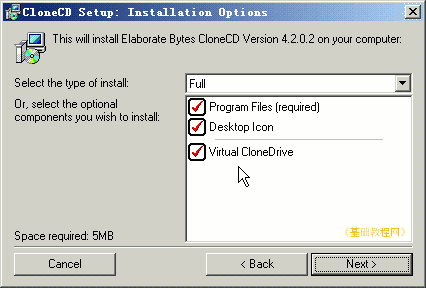
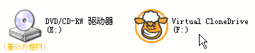
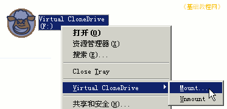
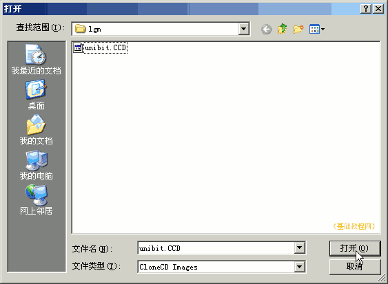
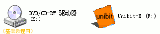
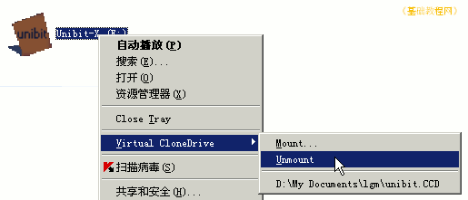
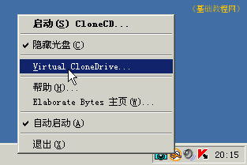
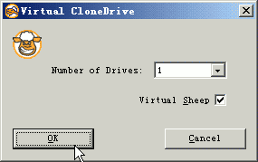
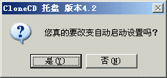

光盘刻录基础教程
作者：TeliuTe 来源：基础教程网
虚拟光驱用来加载虚拟光盘，也就是光盘映像文件的，安装以后系统会增加一个光驱，下面我们来看一个练习；
1、CloneCD4.2
1）虚拟光驱软件很多，4.2版本中自带了虚拟光驱，安装主程序的时候一同安装；

2）安装好以后，在桌面右下角托盘中显示一个绵羊图标，在“我的电脑”中出现一个虚拟光驱；

2、使用虚拟光驱
1）打开“我的电脑”，在虚拟光驱上点右键，选择菜单“Virtual CloneDrive - Mount...”；

2）在出来的打开对话框中，找到.ccd映像文件，选中后点“打开”按钮；

如果要打开其它格式映像文件，点下面的“文件类型”，选择ISO或All
3）打开映像文件后，光驱图标改变，打开后显示里面的内容，就像是真正的光驱一样；

4）弹出虚拟光盘的方法是，在虚拟光驱上点右键，选择“Virtual CloneDrive - Unmount”；

3、设置虚拟光驱
1）在右下角托盘的绵羊图标上点右键，选“Virtual CloneDrive...”；

2）在出来的对话框中可以设置虚拟光驱的数量，光驱上是否显示绵羊图标，然后点“OK”确定；

3）去掉“自动启动”选项的勾，开机时不会自动启动，可以到应用程序菜单中点击“CloneCD - CloneCD Tray”启动；

本节学习了使用 CloneCD 虚拟光驱的基本方法，如果你成功地完成了练习，请继续学习下一课内容；
本教程由86团学校TeliuTe制作|著作权所有
基础教程网：http://teliute.org/
美丽的校园……
转载和引用本站内容，请保留版权信息和本站链接。